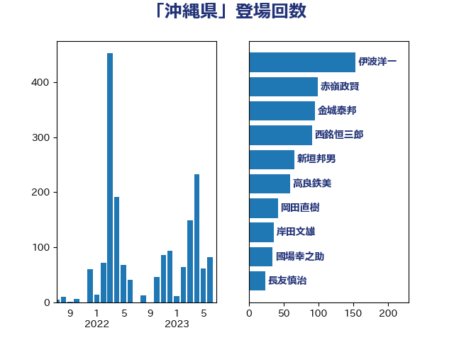

単語「沖縄県」

| 伊波洋一 | 無所属 | 153 回 |
| 赤嶺政賢 | 日本共産党 | 99 回 |
| 金城泰邦 | 公明党 | 95 回 |
| 西銘恒三郎 | 自由民主党 | 91 回 |
| 新垣邦男 | 立憲民主党 | 66 回 |
| 高良鉄美 | 無所属 | 59 回 |
| 岡田直樹 | 自由民主党 | 42 回 |
| 岸田文雄 | 自由民主党 | 36 回 |
| 國場幸之助 | 自由民主党 | 34 回 |
| 長友慎治 | 国民民主党 | 24 回 |
| 紙智子 | 日本共産党 | 23 回 |
| 浜田靖一 | 自由民主党 | 18 回 |
| 勝部賢志 | 立憲民主党 | 17 回 |
| 西村康稔 | 自由民主党 | 16 回 |
| 林芳正 | 自由民主党 | 15 回 |
| 金村龍那 | 日本維新の会 | 14 回 |
| 石橋通宏 | 立憲民主党 | 13 回 |
| 石川香織 | 立憲民主党 | 13 回 |
| 松野博一 | 自由民主党 | 13 回 |
| 山際大志郎 | 自由民主党 | 13 回 |
| ながえ孝子 | 無所属 | 12 回 |
| 比嘉奈津美 | 自由民主党 | 11 回 |
| 有村治子 | 自由民主党 | 10 回 |
| 宮本徹 | 日本共産党 | 10 回 |
| 穀田恵二 | 日本共産党 | 8 回 |
| 河野義博 | 公明党 | 8 回 |
| 山添拓 | 日本共産党 | 8 回 |
| 山崎正恭 | 公明党 | 8 回 |
| 榛葉賀津也 | 国民民主党 | 7 回 |
| 志位和夫 | 日本共産党 | 7 回 |
| 石川大我 | 立憲民主党 | 6 回 |
| 田村貴昭 | 日本共産党 | 6 回 |
| 小野田紀美 | 自由民主党 | 6 回 |
| 小池晃 | 日本共産党 | 6 回 |
| 大島敦 | 立憲民主党 | 6 回 |
| 阿部知子 | 立憲民主党 | 5 回 |
| 萩生田光一 | 自由民主党 | 5 回 |
| 自見はなこ | 自由民主党 | 5 回 |
| 山岸一生 | 立憲民主党 | 5 回 |
| 加藤勝信 | 自由民主党 | 5 回 |
| 伊佐進一 | 公明党 | 5 回 |
| 今井絵理子 | 自由民主党 | 5 回 |
| 金子道仁 | 日本維新の会 | 4 回 |
| 西村智奈美 | 立憲民主党 | 4 回 |
| 芳賀道也 | 国民民主党 | 4 回 |
| 磯崎仁彦 | 自由民主党 | 4 回 |
| 浜田聡 | NHK党 | 4 回 |
| 末松信介 | 自由民主党 | 4 回 |
| 早稲田ゆき | 立憲民主党 | 4 回 |
| 掘井健智 | 日本維新の会 | 4 回 |
| 後藤茂之 | 自由民主党 | 4 回 |
| 佐藤正久 | 自由民主党 | 4 回 |
| 井上哲士 | 日本共産党 | 4 回 |
| 上田清司 | 国民民主党 | 4 回 |
| 馬場伸幸 | 日本維新の会 | 3 回 |
| 鈴木俊一 | 自由民主党 | 3 回 |
| 道下大樹 | 立憲民主党 | 3 回 |
| 谷公一 | 自由民主党 | 3 回 |
| 石井正弘 | 自由民主党 | 3 回 |
| 矢倉克夫 | 公明党 | 3 回 |
| 永岡桂子 | 自由民主党 | 3 回 |
| 水岡俊一 | 立憲民主党 | 3 回 |
| 柚木道義 | 立憲民主党 | 3 回 |
| 松本剛明 | 自由民主党 | 3 回 |
| 斉藤鉄夫 | 公明党 | 3 回 |
| 川田龍平 | 立憲民主党 | 3 回 |
| 島尻安伊子 | 自由民主党 | 3 回 |
| 小渕優子 | 自由民主党 | 3 回 |
| 宮崎政久 | 自由民主党 | 3 回 |
| 安江伸夫 | 公明党 | 3 回 |
| 吉川沙織 | 立憲民主党 | 3 回 |
| 井坂信彦 | 立憲民主党 | 3 回 |
| 中島克仁 | 立憲民主党 | 3 回 |
| 須藤元気 | 無所属 | 2 回 |
| 青山繁晴 | 自由民主党 | 2 回 |
| 里見隆治 | 公明党 | 2 回 |
| 角田秀穂 | 公明党 | 2 回 |
| 西村明宏 | 自由民主党 | 2 回 |
| 若松謙維 | 公明党 | 2 回 |
| 臼井正一 | 自由民主党 | 2 回 |
| 窪田哲也 | 公明党 | 2 回 |
| 福山哲郎 | 立憲民主党 | 2 回 |
| 田村憲久 | 自由民主党 | 2 回 |
| 浜口誠 | 国民民主党 | 2 回 |
| 泉健太 | 立憲民主党 | 2 回 |
| 水野素子 | 立憲民主党 | 2 回 |
| 柴田巧 | 日本維新の会 | 2 回 |
| 杉尾秀哉 | 立憲民主党 | 2 回 |
| 本田顕子 | 自由民主党 | 2 回 |
| 木村次郎 | 自由民主党 | 2 回 |
| 岩渕友 | 日本共産党 | 2 回 |
| 山田賢司 | 自由民主党 | 2 回 |
| 山本佐知子 | 自由民主党 | 2 回 |
| 宮崎勝 | 公明党 | 2 回 |
| 大河原まさこ | 立憲民主党 | 2 回 |
| 大島九州男 | れいわ新選組 | 2 回 |
| 和田政宗 | 自由民主党 | 2 回 |
| 古賀千景 | 立憲民主党 | 2 回 |
| 井野俊郎 | 自由民主党 | 2 回 |
| 三木圭恵 | 日本維新の会 | 2 回 |
| 鬼木誠 | 立憲民主党 | 1 回 |
| 高橋千鶴子 | 日本共産党 | 1 回 |
| 高木啓 | 自由民主党 | 1 回 |
| 青木一彦 | 自由民主党 | 1 回 |
| 鈴木英敬 | 自由民主党 | 1 回 |
| 鈴木宗男 | 日本維新の会 | 1 回 |
| 野田聖子 | 自由民主党 | 1 回 |
| 野田国義 | 立憲民主党 | 1 回 |
| 野中厚 | 自由民主党 | 1 回 |
| 足立敏之 | 自由民主党 | 1 回 |
| 谷田川元 | 立憲民主党 | 1 回 |
| 舩後靖彦 | れいわ新選組 | 1 回 |
| 美延映夫 | 日本維新の会 | 1 回 |
| 緒方林太郎 | 無所属 | 1 回 |
| 笠浩史 | 無所属 | 1 回 |
| 竹詰仁 | 国民民主党 | 1 回 |
| 福田昭夫 | 立憲民主党 | 1 回 |
| 神津たけし | 立憲民主党 | 1 回 |
| 石井苗子 | 日本維新の会 | 1 回 |
| 石井啓一 | 公明党 | 1 回 |
| 盛山正仁 | 自由民主党 | 1 回 |
| 田中健 | 国民民主党 | 1 回 |
| 牧野たかお | 自由民主党 | 1 回 |
| 浅川義治 | 日本維新の会 | 1 回 |
| 河西宏一 | 公明党 | 1 回 |
| 池田佳隆 | 自由民主党 | 1 回 |
| 池下卓 | 日本維新の会 | 1 回 |
| 武部新 | 自由民主党 | 1 回 |
| 櫻井周 | 立憲民主党 | 1 回 |
| 橘慶一郎 | 自由民主党 | 1 回 |
| 東徹 | 日本維新の会 | 1 回 |
| 杉田水脈 | 自由民主党 | 1 回 |
| 杉本和巳 | 日本維新の会 | 1 回 |
| 木村英子 | れいわ新選組 | 1 回 |
| 斎藤アレックス | 国民民主党 | 1 回 |
| 庄子賢一 | 公明党 | 1 回 |
| 島村大 | 自由民主党 | 1 回 |
| 岩谷良平 | 日本維新の会 | 1 回 |
| 山口那津男 | 公明党 | 1 回 |
| 山下雄平 | 自由民主党 | 1 回 |
| 小林茂樹 | 自由民主党 | 1 回 |
| 守島正 | 日本維新の会 | 1 回 |
| 奥下剛光 | 日本維新の会 | 1 回 |
| 塩川鉄也 | 日本共産党 | 1 回 |
| 塩崎彰久 | 自由民主党 | 1 回 |
| 堀井巌 | 自由民主党 | 1 回 |
| 吉田豊史 | 無所属 | 1 回 |
| 吉田統彦 | 立憲民主党 | 1 回 |
| 吉田とも代 | 日本維新の会 | 1 回 |
| 吉川赳 | 無所属 | 1 回 |
| 古屋範子 | 公明党 | 1 回 |
| 冨樫博之 | 自由民主党 | 1 回 |
| 倉林明子 | 日本共産党 | 1 回 |
| 伊藤岳 | 日本共産党 | 1 回 |
| 三浦信祐 | 公明党 | 1 回 |
| 三ッ林裕巳 | 自由民主党 | 1 回 |
| 一谷勇一郎 | 日本維新の会 | 1 回 |